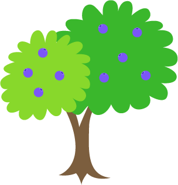
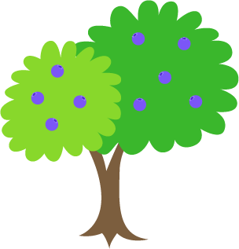

안농하농
안녕한 농촌을 위해 함께하다
scroll


안녕한 농촌을 위해 함께하다
scroll


농촌에 살던 많은 청년들이 농촌에서 도심으로 이동하여
농촌에 청년 일손이 부족해지고 농촌의 고령화가 점점 심
해지고 있습니다.


농촌에 남은 시니어들은 요즘 농촌에 청년 일손이 없어 농작을 하지 못해
농작물의 품질이 저하되어 소득을 얻기에 점점 힘들어 지고 있습니다.


점점 줄어드는 농촌 인구 감소와 고령화, 그로인한 농촌 소득감소로
농촌 지역들이 점점 사라지고 있습니다.
낡고 옛스러운 것을 즐기는 2030세대의 '러스틱 라이프' 트렌드와
일손 부족의 문제점을 안고 있는 농가를 연결시키는 '러스틱 여행'을 제공하여
새로운 인구 유입과 농촌 활성화에 도움이 되게 합니다.


핵신 서비스 1.
농촌 어르신의 안농하농
오프라인 서비스
일손이 부족한 농가의 어르신들이
농협을 통해 오프라인으로 일손을
지원받을 수 있는 서비스입니다.

농촌시니어가 농협인력 중개센터에 일손 구인요청과 함께
일손 지원 시 제공하는 하숙소와 일당 금액을 수기로 기입해요


안농하농 앱이 농협 인력중개센터에서
해당 정보를 받아 구인 프로그램을 업데이트 해요


농촌시니어는 안농하농 앱을 통해 농촌 일손구하기를 신청해
부족한 일손을 마련하고, 청년은 일손을 도우며 힙한 러스틱라이프를 체험해요


핵신 서비스 2.
힙합 2030의 안농하농
온라인 서비스
농촌 시니어들의 일손을 도우며
농촌의 러스틱라이프를 직접적으로
체험 할 수 있는 서비스입니다.

도와주농은 초보자들도 배울 수 있는 쉬운 수확 작물부터
고급 농촌일손 돕기 프로그램을 제공해요

 

안농하농에서 농촌 일손 구하기를 확인하고
해당 프로그램에 지원을 신청하여 농촌일을 도와워요

안농하농에서 농촌 일손 구하기를 확인하고
해당 프로그램에 지원을 신청하여 농촌일을 도와워요
핵신 서비스 3.
힙합 2030의 안농하농
온라인 서비스
간접적인 농촌 체험을 즐기고
여행하며 여유롭게 러스틱라이프를
즐길 수 있는 서비스 입니다.

농촌여행, 동물 돌보기, 농작물 수확, 베이킹, 간접 귀농체험 등
힐링부터 부담없이 러스틱라이프를 체험할 수 있어요


하숙소 프로그램을 통해 기존의 시골 숙박 시설보다
농촌과 밀접한 숙소를 낮은 가격으로도 장기여행이 가능해요

하숙소 프로그램을 통해 기존의 시골 숙박 시설보다
농촌과 밀접한 숙소를 낮은 가격으로도 장기여행이 가능해요
LOGO
친군하게 안녕하고 손을 흔드는 모습과 농촌의 자연을 상징하는
잎의 형태는 농촌의 안녕을 위해 청년과 농촌을 연결하는 서비스를
제공하는 안농하농의 정체성을 나타냅니다.

Logotype
카페24 서라운드 Bold
안녕한 농촌을
위해 함께하는
안농하농
Pretendard
일손이 필요한
농촌 어르신들을
위한 안농하농
라운드
하늘
심플한
친근한
여행
친근한
Sub 01
Blue
#59C7F9
Sub 02
Blue
#9FDFFB
Sub 03
Blue
#9FDFFB
Point 01
Blue
#FFB838
Point 02
Blue
#8FCE4A
Main
Peaceful Sky Blue
# 2DB9F7